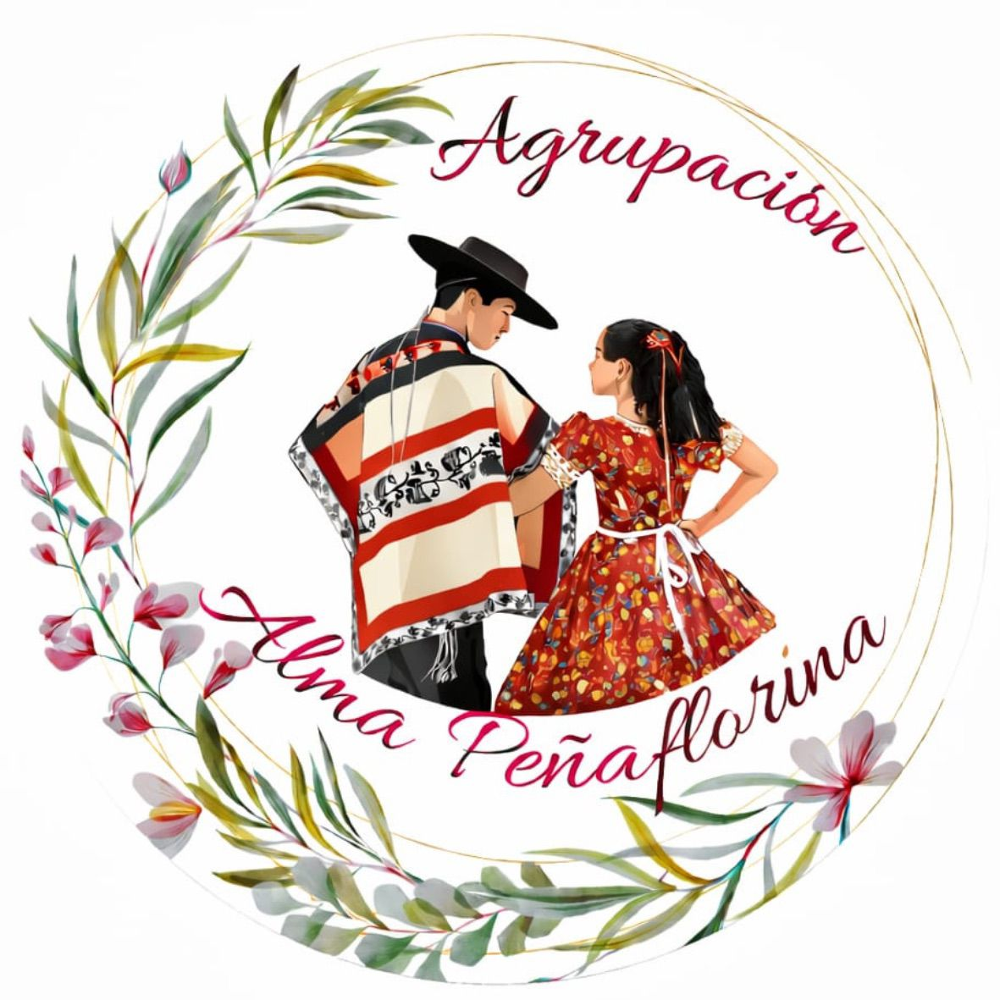

Cueca · Cultura · Comunidad
+10
Años promoviendo la cueca
12
Eventos y presentaciones al año
100%
Pasión por nuestras tradiciones
Tradición que se baila con el corazón.
Alma Peñaflorina es una agrupación cuequera dedicada a mantener viva la identidad chilena, compartir nuestras raíces y llevar la cueca a escenarios, encuentros y actividades comunitarias.

Agrupación Alma Peñaflorina
Nuestro logo representa identidad, tradición y amor por la cueca chilena.
Nuestra agrupación
Nacimos con la idea de representar a Peñaflor con orgullo, fortalecer la participación cultural y crear espacios donde la cueca se viva con identidad, respeto y alegría.
Noticias
Espacio para comunicar actividades, ensayos, presentaciones y novedades de la agrupación.
Preparando noticias...
Estamos cargando las publicaciones desde archivos Markdown.
Calendario de eventos
Revisa los próximos encuentros y selecciona un día para ver los detalles en una ventana emergente. Puedes cambiar de mes y explorar la agenda de la agrupación.
Calendario
Lun
Mar
Mié
Jue
Vie
Sáb
Dom
Contacto
¿Quieres invitarnos a un evento, colaborar o sumarte a la agrupación? Conversemos.
Email: almapenaflorina@gmail.com
Instagram: @af.almapenaflorina
Teléfono: +56 9 4925 3358
Ubicación: Parque Municipal El Trapiche, Peñaflor, Región Metropolitana, Chile